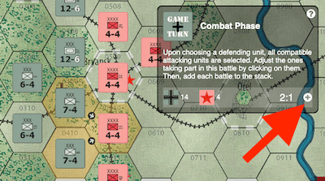
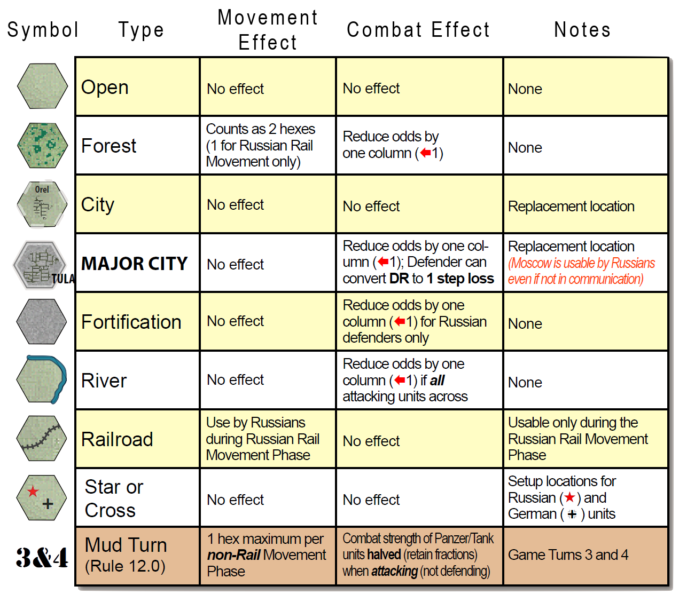
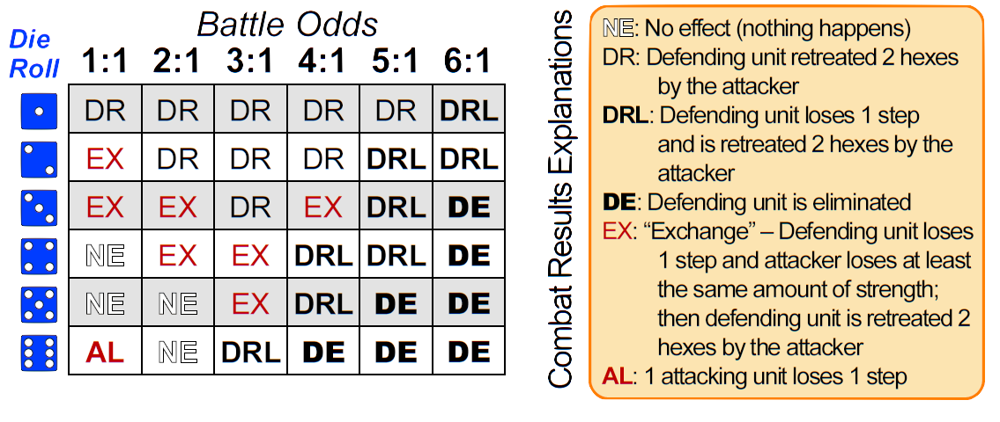

Sequence of Play
Here is a summary of the procedure of each game turn embedded in this implementation of Battle for Moscow. For more details on this and other base characteristics of the game, please consult the rules.
German Player Turn
- German Replacement Phase: the Germans receive replacements (except during turn 1).
- German (Special) Panzer Movement Phase: all German armor/panzer units may move.
- German Combat Phase: all German units may attack.
- German Movement Phase: all German units may move (including panzers that moved in Phase 2).
Russian Player Turn
- Russian Replacement Phase: the Russians receive replacements (plus 1 reinforcement during turn 4).
- Russian (Special) Rail Movement Phase: all Russian units that begin this Phase on a rail line may move along it.
- Russian Combat Phase: all Russian units may attack.
- Russian Movement Phase: all Russian units may move (including those that moved by rail in Phase 6).
How To...
... Add Battles

When entering a combat phase, start clicking on defending units that you wish to attack.
For each of them, all available attacking units are highlighted and the corresponding battle odds are automatically calculated and displayed on the dashboard.
Click on the sign to add this battle to the list that will be resolved during the next step, and proceed to selecting the next battles of this turn if any.
... View Cities' Control

Who controls the cities at the end of the game decides the winner. Each city is worth victory points: Moscow 5, Tula 3, every other city 1. At the end of Game Turn 9 the Russian points are compared with what the Red Army held at that date in 1941 (Moscow, Tula and Ryazan: 9 points): more is a Russian victory, fewer a German one, the same is the historical result. A German army still holding Moscow at the end wins decisively. Click the turn bar at any time to see the current points and a note on the history of the turn. (Tournament rules keep their own scoring.)
Each city's control is with the army whose units were the last ones to have entered that city.
In order to assess which city is under which army's control at any point throughout the game, simply click on the turn information bar to open a summary and highlight the cities' current status on the map. Then, click again on the turn information to close the view.
... Show unit status on the map
Tick a box in the Layers bar at the top left to show a status on the map; nothing is shown while the boxes are unticked. Supply: every unit cut off from its map edge (not in communication) gets a red dashed frame and its hex is shaded, and the bar counts them for both sides. Fatigue: a tired unit gets a bar of three segments under it, one filled segment per fatigue level. Press S or F to switch these layers on or off.
Manpower, Losses and Sound
The rules give a German corps about 25,000 soldiers and a Russian army about 40,000; this version counts the 1st Shock Army as 50,000 and a Guards cavalry corps as 15,000. Every step lost costs half of a unit's men. During a Combat Phase the losses of the battles fought so far are shown under the battle table; the losses of the whole campaign and their ratio are shown in the turn report (click the turn bar) and at the end of the game; tick Men in the Layers bar (key P) to see the estimated manpower of each unit on the map.
Sound effects (key M to switch them off) are synthesised in the browser: the German attacks open with a battery of 15 cm heavy howitzers, the Russian ones with 76 mm divisional guns, the 1st Shock Army with a Katyusha salvo, and in winter the Russian infantry charges with a "Ura!". Moving infantry marches (on snow in winter), panzers are a real recording (the original Maybach engine of Tiger 131 at Bovington, starting and running), and cavalry gallops. When the counteroffensive begins on turn 8, a 1941 recording of the March of the Defenders of Moscow (music by B. Mokrousov, words by A. Surkov) is played.
Fatigue and Supply
Units get tired when they fight, and even more when they are cut off from their map edge. Fatigue is counted in points; every 4 points is one level (at most level 3). A turn is one to two weeks: a unit that attacks every turn is tired after 4 turns and exhausted after 8, like the German divisions of Operation Typhoon by December.
- On the map (Fatigue layer): one box per level; the points towards the next level fill the next box part of the way.
- Gaining fatigue: +1 for each attack, +1 for being attacked (unless the result is NE), +3 at the start of each turn spent cut off from the map edge (+2 more if it is completely surrounded: every hex around it is an enemy unit or in an enemy ZOC), +1 for a German unit within 2 hexes of a railway cut by the partisans, and in winter, for German units without winter clothing (see Command Decisions), +2 per turn outside the towns and +1 in a town other than Moscow and Tula.
- Recovering (at the start of the unit's turn, only if it is in communication and not near a cut railway): -1 if it neither attacked nor was attacked since its previous turn, -2 instead if it also did not move (rest); -1 more if it is in the rear, with no enemy unit within 3 hexes (for the Germans, no partisan band within 2 hexes either); and in a city controlled by its side, -1 more in a town and -2 more in Moscow or Tula. A unit resting in the rear in Moscow thus loses 5 points a turn, one resting at the front 2. A replacement that brings it back to full strength removes all its fatigue, and a replacement step spent on a full-strength unit in communication clears all its fatigue: useful when no unit is off the map to be rebuilt.
- Level 1, tired: no effect on combat yet, in attack or in defence: it is a warning.
- Level 2, exhausted: the unit attacks at half its strength, but still defends at full strength; when a battle with exhausted attackers ends in DE or DRL, the most exhausted attacker loses 1 step as well.
- Level 3, broken: it cannot attack; it defends at 2/5 of its strength, and a DR result against it becomes DRL.
In the battle table, a side weakened by fatigue shows its full strength struck through, then, in orange, the strength it really fights with (point at it for the details): for example two exhausted armies of 4 attacking show 8 4, and a broken army of 10 defending shows 10 4 (2/5 of 10). The odds are worked out with the reduced strength, so fatigue changes the odds only when it pushes them under a column.
Stocks of the major cities
Moscow (up to 4 stock points) and Tula (up to 3) stockpile supplies for their garrison: at the start of the owner's turn the city gains 1 stock point if it is in communication and no enemy unit is within 2 hexes. Both start the game full. A garrison cut off in such a city lives on the stocks: as long as they last, it gains only +1 fatigue per turn (+2 if completely surrounded) and uses 1 stock point per turn (2 if completely surrounded). A city that changes hands loses its stocks. The Supply layer shows the stocks next to the city, a completely surrounded unit with a solid red frame, and a garrison living on its stocks with an orange frame.
Liberated cities
A city changes hands when an enemy unit enters it; a unit retreating through a city does not take it. German control lasts only while the Germans hold the city: as soon as a Russian attack eliminates or drives out its German garrison, the city is Russian again, even if no Russian unit advances into it, and the Germans can no longer bring replacements into it. When the Russians take a German-held city during the Russian turn, the city is liberated: the Russians get 1 extra replacement step in their next Replacement Phase and the liberating unit loses one level of fatigue.
Winter Counteroffensive
The game continues into the Russian winter counteroffensive and ends after Game Turn 9 (December 15th, 1941). Turns 8 and 9 are winter turns.
Turn 8: the Stavka reserves are committed
- 1st and 2nd Guards Cavalry Corps (Belov and Dovator, 6-6) enter on the red-bordered map edge, like the 1st Shock Army on turn 4.
- 3 ski battalions reinforce infantry armies that are in communication (a pair of skis left of the unit symbol).
- 2 partisan bands form behind the German lines (1 more on turn 9, at most 6 bands on the map).
Cavalry
A cavalry corps may keep moving after it enters its first hex in an enemy Zone of Control during a phase, but must stop when it enters a second one.
Ski-reinforced armies
During winter turns, a ski-reinforced army spends only 1 Movement Point to enter a forest hex, and if at least one ski-reinforced army takes part in an attack, the forest does not reduce the odds. An army loses its ski battalions when it is eliminated.
Partisans
The partisans are in the field before Operation Typhoon begins. Soviet records show detachments fighting behind the German lines since the summer of 1941: the game starts with two bands of strength 2, the Klintsy detachment in the forests west of Bryansk (hex 0109) and the «Alexei» detachment on the border of the Smolensk and Kalinin regions (hex 0101, the north-western corner of the map). Other detachments were left behind in advance, with their bases chosen in the forests: when the Germans take Bryansk (strength 2), Vyazma, Rzhev or Mozhaisk (strength 1), the town's group goes into the nearest free forest hex within 2 hexes, not next to a German unit, at the start of the next Russian reinforcement step, and acts from the following turn. If the Red Army retakes the town first, the group stays where it is.
A band forms on an empty forest hex behind the German lines (cut off from Russian communication, or farther from Moscow than the German front) and not next to a German unit, with strength 1 (at most 3; the NKVD detachments dropped on turn 3 start with 2). German lines of communication cannot pass through a band's hex (a band has no zone of control: the hexes around it do not stop German supply or movement), and Russian units in or next to it are in communication. At the start of each Russian turn, every band that did not just form may take one action (click a band on the map to give it its orders):
- Raid: ambush the supply columns of a German unit within 2 hexes: it gains 2 fatigue points for each strength point of the band (a band of strength 3 makes it tired at once), and it cannot recover any fatigue at the start of the next German turn.
- Sabotage rail: cut the German supply line by blowing up the railway in a hex within 1 hex (red cross). Only the Russians move by rail in this game, but the German armies depended on the railways for their ammunition, fuel and food: for the next two German turns, German units within 2 hexes of the cut gain +1 fatigue at the start of their turn and cannot recover.
- Guide the army: this turn, Russian attacks on German units within 1 hex of the band gain one odds column.
- Rise in a town: a German-held town within 2 hexes, with no German unit in it or next to it, when the bands within 2 hexes of the town total 3 strength or more. Roll a die: on a roll up to their total strength (at most 5) the town rises and becomes Russian (a red flag, +1 Russian replacement step); otherwise every band taking part loses 1 strength. A German unit entering the town takes it back.
- Move to an empty forest hex within 2 hexes, or Recruit (+1 strength, only with no German unit within 2 hexes).
The Germans fight back: a German unit entering a band's hex sweeps it, and the German player chooses how: a full sweep destroys the band but costs the unit 4 fatigue points for each strength point of the band; driving it off costs only 2 fatigue points, but the band merely loses 1 strength and slips away into a forest within 2 hexes not next to German units (with no such refuge, it scatters). Also, at the start of each German turn every band next to a German unit loses 1 strength. In 1941 the occupation authorities answered the partisans with mass terror: an order of 16 September 1941 set 50 to 100 executions of hostages for each German soldier killed. The terror only widened the partisan movement.
Hitler's stand-fast order
From Game Turn 9 (the order of 16 December 1941), a German unit at full strength defending in any city converts a DR result into a step loss and does not retreat, as in a major city, unless the German commanders chose an elastic defence (see Command Decisions).
Command Decisions and Weather
At key moments of the campaign you sit at the desk of the Stavka, the General Staff, the NKVD or the OKH and settle what the units on the map cannot settle by themselves: the rail capacity, a special brigade, a parade, the strategic reserves, Hitler's orders. Before that side's turn starts, a dispatch describes the situation, with the documents and broadcasts of the time. Point at an order (or tap it once on a touch screen) to see exactly what it does to the game, then click it to give it; the dispatch then tells what was actually done in 1941. When the computer plays a side, it takes the historical choice and a banner announces it. The decisions taken are listed in the turn report (click the turn bar).
The counteroffensive of 5 and 6 December (turn 8) and the radio bulletin of 13 December (turn 9) are announced the same way, with a single order.
Winter clothing: Army Group Centre needed some 26 to 30 trains a day and received 8 to 10 at its railheads. Woollens and gloves for nearly two million men, at some 5 kg a man, make some 10,000 tonnes, about 20 trains of 500 tonnes: two days of everything that reached the front. In the game they cost the German replacement steps of two turns.
The turn bar shows the typical weather around Moscow at the date of the turn. The map turns brown on the mud turns (3 and 4).
Chronicle
A note on the history of each turn (also shown when you click the turn bar).
Sources: A. M. Samsonov's history of the battle of Moscow (militera.lib.ru/h/samsonov2); the General Staff study of the Moscow operation of the Western Front, 16 November 1941 - 31 January 1942, edited by B. M. Shaposhnikov (1943).
Terrain Effects Chart

Combat Results Table

回合顺序
下面是本游戏每个回合的流程概要。更多细节和基本规则请查阅规则书（英文）。
德军回合
- 德军补充阶段：德军获得补充兵（第 1 回合除外）。
- 德军（特殊）装甲移动阶段：所有德军装甲部队可以移动。
- 德军战斗阶段：所有德军部队可以进攻。
- 德军移动阶段：所有德军部队可以移动（包括在第 2 阶段已经移动过的装甲部队）。
苏军回合
- 苏军补充阶段：苏军获得补充兵（第 4 回合另有 1 支援军）。
- 苏军（特殊）铁路移动阶段：本阶段开始时位于铁路上的所有苏军部队可以沿铁路移动。
- 苏军战斗阶段：所有苏军部队可以进攻。
- 苏军移动阶段：所有苏军部队可以移动（包括在第 6 阶段已经沿铁路移动过的部队）。
操作说明
……添加战斗
进入战斗阶段后，点击你想进攻的敌方部队。
每点一个防守部队，所有能参加进攻的部队都会高亮，战斗比例会自动计算并显示在面板上。
点击 把这场战斗加入下一步要结算的列表，然后继续选择本回合的其他战斗。
……查看城市归属
游戏结束时谁控制哪些城市，决定胜负。每座城市都有胜利点：莫斯科 5 点，图拉 3 点，其他城市各 1 点。第 9 回合结束时，把苏军的胜利点和 1941 年同一天红军实际控制的城市（莫斯科、图拉和梁赞，共 9 点）相比：多于 9 点是苏军胜利，少于 9 点是德军胜利，相等就是历史结果。德军如果到最后仍占着莫斯科，就是德军决定性胜利。任何时候点击回合栏，都能看到当前的胜利点和本回合的历史注释。（锦标赛规则保留它自己的计分方法。）
一座城市归最后进入它的一方控制。
想知道某个时刻每座城市归谁，点击回合栏打开概要，地图上会标出各城市当前的归属；再点一次回合栏关闭。
……在地图上显示部队状态
勾选左上角图层栏里的方框，地图上才会显示对应的状态；不勾选时什么都不显示。补给：所有与己方地图边缘失去联系（不在交通线上）的部队都会加上红色虚线框，所在格子变暗，栏里会统计双方被切断的部队数。疲劳：疲劳的部队下面有一条三格的疲劳条。按 S 或 F 键也能开关这两个图层。
兵力、战损与声音
规则书把一个德军军算作约 25,000 人，一个苏军集团军约 40,000 人；本版本把突击第 1 集团军算作 50,000 人，一个近卫骑兵军算作 15,000 人。每损失一级，就损失该部队一半的兵力。战斗阶段中，战斗表下方显示本轮已打的战斗造成的损失；整场战役的累计损失和战损比显示在回合报告（点击回合栏）和终局画面里；勾选图层栏里的兵力（P 键），可以在地图上看到每支部队的估计兵力。
音效（M 键开关）：德军进攻开场是一个 15 厘米重榴弹炮连的齐射，苏军是 76 毫米师属火炮，突击第 1 集团军是喀秋莎齐射，冬季苏军步兵冲锋时会喊“乌拉！”。步兵移动时是齐步行军声（冬季是踩雪声），装甲部队是真实录音（博文顿博物馆虎式 131 号原装迈巴赫发动机的点火和运转），骑兵是马蹄声。第 8 回合反攻开始时，播放 1941 年录制的《莫斯科保卫者之歌》（B. 莫克罗乌索夫作曲，A. 苏尔科夫作词）。
疲劳与补给
部队打仗会疲劳，被切断与己方地图边缘的联系时疲劳得更快。疲劳按点数计算，每 4 点为一级（最高 3 级）。一个回合相当于一到两周：每回合都进攻的部队，4 个回合后疲劳，8 个回合后疲惫，就像“台风”行动的德军各师到 12 月时那样。
- 地图上（疲劳图层）：每一级一格；不满一级的点数按比例填进下一格。
- 疲劳增加：每进攻一次 +1，每被进攻一次 +1（结果为 NE 时除外）；每个回合开始时如果被切断与地图边缘的联系 +3（如果被完全包围，即周围每个格子都是敌军或在敌方控制区内，再 +2）；德军部队在被游击队炸断的铁路 2 格内 +1；冬季没有冬装的德军（见“指挥决策”）在城镇外每回合 +2，在莫斯科和图拉以外的城镇里 +1。
- 疲劳恢复（在该部队所属一方的回合开始时，只有在交通线上、且不在被炸断的铁路附近时才恢复）：自上一回合以来既没有进攻也没有被进攻 -1；如果也没有移动（休整）则改为 -2；在后方（3 格内没有敌军部队；德军还要求 2 格内没有游击队）再 -1；在己方控制的城市里，小城镇再 -1，莫斯科和图拉再 -2。所以在莫斯科后方休整的部队每回合恢复 5 点，在前线休整只恢复 2 点。补充兵把部队恢复到满编时，清除它的全部疲劳；一个补充兵步数用在一支有补给的满编部队上，可清除它的全部疲劳：在没有被消灭的部队需要重建时很有用。
- 1 级，疲劳：进攻和防守都还不受影响，只是一个警告。
- 2 级，疲惫：进攻时只有一半兵力，防守时仍是满兵力；有疲惫部队参加的进攻如果结果是 DE 或 DRL，最疲惫的进攻部队也要损失 1 级。
- 3 级，崩溃：不能进攻；防守时只有 2/5 兵力，对它的 DR 结果变成 DRL。
在战斗表里，因疲劳而削弱的一方会把原兵力划掉，后面用橙色显示实际参战的兵力（鼠标放上去看详细说明）：例如两个疲惫的 4 兵力集团军进攻时显示 8 4，一个崩溃的 10 兵力集团军防守时显示 10 4（10 的 2/5）。比例按削弱后的兵力计算，所以只有当疲劳让比例掉到下一栏时，才会影响战斗比例。
大城市的储备
莫斯科（最多 4 点储备）和图拉（最多 3 点）为守军囤积物资：在控制方回合开始时，如果城市在交通线上、且 2 格内没有敌军，就增加 1 点储备。游戏开始时两城都是满的。被切断在这类城市里的守军靠储备生活：只要储备还在，每回合只加 +1 疲劳（被完全包围时 +2），并消耗 1 点储备（被完全包围时 2 点）。城市易手时储备清零。补给图层会在城市旁显示储备，用红色实线框标出被完全包围的部队，用橙色框标出靠储备生活的守军。
解放城市
敌方部队进入一座城市，这座城市就易手；撤退时路过的城市不会因此易手。德军只有在守住城市时才控制它：一旦苏军的进攻消灭或赶走了德军守军，这座城市立即回到苏军手中，即使没有苏军部队推进进去，德军也不能再在那里补充兵力。在苏军回合中夺回德军占领的城市，就是解放：苏军在下一个补充阶段多得 1 个补充兵步数，解放它的部队疲劳降一级。
冬季反攻
游戏一直打到苏军冬季反攻，在第 9 回合（1941 年 12 月 15 日）后结束。第 8 和第 9 回合是冬季回合。
第 8 回合：大本营预备队投入战斗
- 近卫骑兵第 1 军和第 2 军（别洛夫和多瓦托尔，6-6）从红边地图边缘进入，和第 4 回合的突击第 1 集团军一样。
- 3 个滑雪营加强在交通线上的步兵集团军（部队符号左边画一副滑雪板）。
- 2 支游击队在德军后方组建（第 9 回合再加 1 支，地图上最多 6 支）。
骑兵
骑兵军在一个阶段里进入第一个敌方控制区格子后还可以继续移动，但进入第二个时必须停下。
滑雪加强的集团军
冬季回合里，有滑雪营加强的集团军进入森林格只需 1 点移动力；只要有一个滑雪加强的集团军参加进攻，森林就不降低战斗比例。集团军被消灭时，滑雪营也随之失去。
游击队
台风行动开始之前，游击队就已经在战斗了。苏联档案记载，1941 年夏天起就有游击队在德军后方作战：游戏开始时地图上有两支力量为 2 的游击队，一支是布良斯克以西森林里的克林齐游击队（0109 格），一支是斯摩棱斯克州和加里宁州交界处的«阿列克谢»游击队（地图西北角的 0101 格）。还有一些游击队是预先留下的，事先在森林里选好了基地：德军攻占布良斯克（力量 2）、维亚济马、勒热夫或莫扎伊斯克（力量 1）后，在下一个苏军增援步骤开始时，该城的游击队进入 2 格内最近的、不与德军相邻的空森林格，从再下一回合起行动。如果红军先把城市夺回来，这支游击队就留在原地不动。
游击队在德军后方（与苏军交通线隔断，或比德军前沿离莫斯科更远）、不与德军相邻的空森林格里组建，初始力量 1（最多 3；第 3 回合空投的 NKVD 分队为 2）。德军的交通线不能穿过游击队所在的格子（游击队没有控制区：它周围的格子不妨碍德军的补给和移动），而位于游击队格子或其相邻格子的苏军部队算作在交通线上。每个苏军回合开始时，每支不是刚组建的游击队可以采取一个行动（在地图上点击某支游击队给它下令）：
- 伏击：伏击 2 格内一支德军部队的补给车队：它每受游击队 1 点力量的伏击就增加 2 点疲劳（力量 3 的游击队一次就让它进入“疲劳”），并且在下一个德军回合开始时不能恢复疲劳。
- 破坏铁路：炸毁 1 格内某个格子的铁路（红叉），切断德军补给线。在本游戏中只有苏军能沿铁路移动，但德军靠铁路运送弹药、燃料和口粮：在接下来的两个德军回合里，被炸点 2 格内的德军部队在回合开始时 +1 疲劳，并且不能恢复。
- 为大军带路：本回合苏军进攻该游击队 1 格内的德军部队时，战斗比例 +1 栏。
- 城中起义：2 格内一座德军控制的城镇，城里及其相邻格都没有德军，并且该城 2 格内的游击队力量合计 3 点或以上时可以发动。掷一个骰子：点数不超过游击队总力量（最多算 5）时，城镇起义成功，变为苏军控制（插上红旗，苏军 +1 个补充兵步数）；否则每支参加的游击队损失 1 点力量。德军部队进入该城镇即可收复。
- 转移到 2 格内的空森林格，或扩编（+1 力量，只有在 2 格内没有德军时才行）。
德军也会反击：德军部队进入游击队所在的格子会进行清剿，由德军玩家选择方式：全面清剿能消灭这支游击队，但游击队每有 1 点力量，部队就增加 4 点疲劳；驱散只增加 2 点疲劳，但游击队只损失 1 点力量，幸存者逃进 2 格内不与德军相邻的森林（没有这样的森林就被打散）。另外，每个德军回合开始时，与德军相邻的游击队损失 1 点力量。1941 年占领当局以大规模恐怖回应游击队：1941 年 9 月 16 日的一道命令规定，每有一名德军士兵被杀，就处决 50 到 100 名人质。恐怖只让游击运动越来越广。
希特勒的死守令
从第 9 回合起（1941 年 12 月 16 日的命令），满编德军在任何城市防守时，都会把 DR 结果改为损失一级、不撤退，和在大城市里一样；除非德军指挥官选择了弹性防御（见“指挥决策”）。
指挥决策与天气
在战役的关键时刻，你坐到最高统帅部大本营、总参谋部、内务人民委员部或德国陆军总司令部的办公桌前，决定那些地图上的部队自己决定不了的事：铁路运力、一个特种旅、一次阅兵、战略预备队、希特勒的命令。在那一方的回合开始之前，一份全屏电报会配上当时的文件和广播，介绍当时的形势。把鼠标放在命令上（触屏上点一下），可以看到它对游戏的确切影响，再点击就下达命令；之后电报会告诉你 1941 年实际是怎么做的。由电脑操纵的一方会按史实选择，并用横幅宣布。已经做出的决策列在回合报告里（点击回合栏）。电报里的重点词句用红铅笔划了出来。
12 月 5 日和 6 日的反攻（第 8 回合）以及 12 月 13 日的电台公报（第 9 回合）也用同样的方式宣布，只有一个命令可选。
冬装：中央集团军群每天需要约 26 到 30 列火车，而它的铁路终点站每天只收到 8 到 10 列。近两百万人的毛织衣物和手套，每人约 5 公斤，共约 1 万吨，约合 20 列 500 吨的火车，相当于前线两天的全部到货。在游戏里，选择冬装优先要付出两个回合的德军补充兵。
回合栏会显示当时莫斯科一带的典型天气。泥泞回合（第 3 和第 4 回合）地图会变成土黄色。
编年史
每个回合的一段历史注释（点击回合栏时也会显示）。
资料来源：A. M. 萨姆索诺夫的莫斯科会战史（militera.lib.ru/h/samsonov2）；B. M. 沙波什尼科夫主编的总参谋部战役研究《西方面军的莫斯科战役，1941 年 11 月 16 日至 1942 年 1 月 31 日》（1943 年）。
地形效果表
战斗结果表


 Redeployment Phase
Redeployment Phase